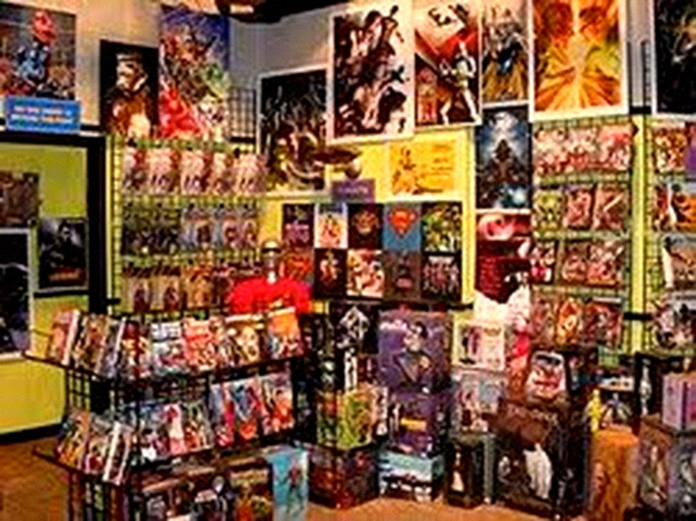

Лавка, которая выросла из одной полки
В 2012 году двое друзей арендовали подвал в 14 квадратных метров и выложили на единственную полку шестьдесят комиксов и три диска для PS3. Сегодня Geek занимает четыре зала в центре Екатеринбурга и всё ещё начинает день с разговора о том, что люди читают, во что играют и что слушают.

Двенадцать лет, шесть главных дат
Одна полка
Артём и Илья, два друга-сисадмина, снимают подвал в 14 м² в центре города. На единственной полке стоят шестьдесят комиксов и три диска для PS3. В первую неделю продаётся два комикса, и один из них покупает мама Артёма.
Первый импорт
Заказываем первую партию манги и фигурок напрямую из Японии. Очередь за ними выстраивается раньше, чем приходит коробка.
Зал с винилом
Открываем музыкальный отдел: пластинки, CD и проигрыватель, на котором любую пластинку можно послушать до покупки.
Магазин в интернете
За одну весну переносим каталог онлайн. Заказы упаковываем сами и вкладываем в каждый стикер и конфету.
Еда и газировка
На прилавке появляются рамен, моти и бутылки с шариком. Выяснилось, что к манге обязательно нужен чай.
Четыре зала и клуб
Сегодня в Geek четыре тематических зала и клуб постоянных гиков с уровнями, картами и промокодами.
Три правила, которые не обсуждаются
Только подлинное
Каждый товар проходит проверку, а на карточке мы честно пишем, откуда он и в каком состоянии.
Проверено руками
Игровые диски запускаем на консоли перед продажей, пластинки слушаем от первой до последней дорожки.
Сообщество важнее кассы
По пятницам у нас меняются комиксами, играют в настолки и спорят о финалах. Вход свободный.
Четыре зала, сто тридцать четыре метра
Комиксы и манга
Стеллажи от пола до потолка и диван для читателей.
Игры и гаджеты
Диски PS3, геймпады, кубики и два телевизора для пробы.
Винил и CD
Проигрыватель и наушники, чтобы услышать до покупки.
Кафе-бар
Рамен, матча и газировка с шариком за общим столом.
Люди, которые вас встретят
Что спрашивают чаще всего
Да. Оцениваем по состоянию и редкости, платим деньгами или баллами клуба. Принесите коробку целиком, и мы всё посмотрим при вас.
Каждый диск запускаем на консоли, проверяем загрузку и сохранения, осматриваем поверхность под лампой. Если диск не прошёл, он в каталог не попадает.
Баллы опыта начисляются за действия на сайте: заглянуть в карточку, положить товар в корзину, вступить в клуб. Новые уровни открывают промокоды, а один код спрятан за секретной комбинацией клавиш.
Можно. Напишите нам, и мы поищем издание у поставщиков. Для участников клуба предзаказы фигурок и манги идут без очереди.
Нет. Geek вымышленный магазин, а сайт собран как демонстрация. Товары, цены и люди придуманы, оплата не подключена, заказы никуда не отправляются.
Заходите в гости
Екатеринбург, район Центр. Точный адрес зала мы присылаем участникам клуба вместе с картой.